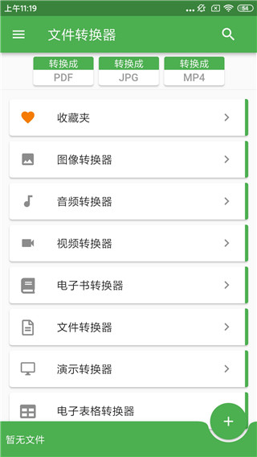
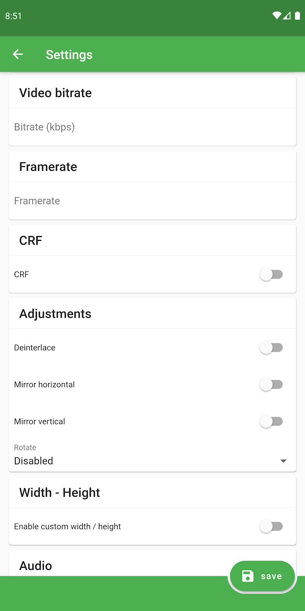

用了 file converter 这么久，才发现它藏着这五个冷门玩法
你以为它只是个 PDF 转换器？从网址抓取、离线转码到按质量而非码率压缩，这些深挖才能找到的隐藏功能让效率直接翻倍。
你以为 file converter官网 只是个 PDF 转 Word 的小工具？其实它藏着一堆官方从来不宣传的冷门功能——下载装上翻到底才发现，有几个入口的设计简直像产品经理藏在草丛里的彩蛋。今天把这五个从草丛里扒出来，分享给还在只会用默认参数的朋友们。

第一个：从网址直接抓内容来转
大多数人用 file converter 的流程是：选文件 → 选格式 → 转完拿走。但主界面那个「+」号点开之后，藏着一个「从网址转换」的入口——这东西的用法我琢磨了好久才摸清。
具体路径是：主界面 → 点右下角「+」→ 弹出菜单里选「从网址转换」→ 粘贴 URL。粘贴什么 URL 都行——它能直接提取网页里的 <table> 标签转成 Excel 表格，也能抓 PDF 链接直接下载并转换。
什么场景真有用？客户发了一个在线表格让你整理，想导入本地数据库但网页不让下载 CSV；或者某个在线文档的 PDF 链接复制过来，省了先下载再选文件的两步操作。说真的，第一次成功把网页表格直接转成可编辑的 XLSX 时，我盯着屏幕愣了三秒钟——这比手动复制粘贴强了不止一个量级。
第二个：按质量而非码率控制视频体积
大家调视频压缩时是不是都去改那个码率滑块？我以前也是。直到在视频 Settings 页翻到 CRF 参数才意识到：我之前一直在用最笨的办法。
CRF 是 Constant Rate Factor 的缩写，按质量而非固定码率来控制输出。数值越低质量越高——18 几乎无损，23 是默认值正常观看足够，28 以上体积很小但画质明显下降。好处是：简单画面不浪费码率、复杂画面又不会码率不够，比死卡一个 4000kbps 灵活得多。
具体路径：转换摘要页 → 点 Settings 齿轮图标 → 视频设置页 → 找到 CRF 参数项。这玩意儿藏得真深，默认只给码率滑块，要往下翻才能看到。什么人用得上？经常压缩 4K 视频、或者对体积和画质平衡有要求的朋友。普通用户直接用默认 CRF 23 就行，不用纠结。
第三个：音视频的离线本地转换
file converter 的大部分转换走云端——这意味着网络不通就卡住了。但音视频类转换有个开关能切离线模式，绕开网络直接本地转码。
触发点藏在 file converter文档 里（我也是翻到那里才知道）：当公司 Wi-Fi 屏蔽了外部请求、或者大文件转换时 Wi-Fi 上传太慢，去音视频 Settings 页找「离线模式」开关，打开之后直接调用设备本地的转码能力。
什么人用得上？经常在没信号的地铁上处理视频素材的通勤党、或者不想把私人视频上传云端的朋友。提醒一下：离线模式依赖手机硬件，老机型的转码速度可能比云端还慢，别盲目切。

第四个：PDF 密码解锁后再转
客户发的 PDF 带了密码保护，你知道密码但 file converter 一转就失败——是不是以前都是先找个在线工具解密再回来转？其实 file converter 自己就能处理。
具体路径：选择带密码的 PDF → 开始转换 → 转换会立刻失败 → 去「失败的」里找到这条记录 → 重转时弹出密码输入框 → 输入密码解锁。整个流程不用离开 app，也不用把密码丢给第三方在线解密工具。
注意：这只适用于知道密码的情况。DRM 加密的版权内容（比如 Netflix 离线缓存、带 DRM 的 Kindle 电子书）是绕过不了的，别在这上面浪费时间。
第五个：Settings 里的编码切换救乱码
CSV 转 XLSX 后中文全是乱码？大多数人遇到这个问题第一反应是换个 app。其实 file converter 的 Settings 里藏着编码切换选项——默认 UTF-8 不行，就改成 GBK 或 GB2312 再试一次。
具体路径：转换 Settings → 找到「编码」参数项 → 从下拉列表里选对应的编码格式。这个小开关藏在一堆设置项中间，不仔细看根本找不到。同理，电子表格转换还有个「分隔符」参数——源 CSV 用 Tab 或分号分隔而不是逗号时，默认逗号分隔符会导致列全错位，切一下分隔符就正常了。
一个不得不提的坑：DRM 和路径限制
说到这顺便提个坑——file converter 对 DRM 加密内容无能为力（这是版权方的硬性加密，不是 app 懒），还有某些手机的中文路径加特殊字符组合会触发兼容性问题。遇到后者，把文件改成简单英文名丢到根目录下再转，大概率能解决。
还有个细节值得注意：转换时手机需要至少两倍源文件大小的空间（原文件加临时文件加输出文件），批量转换前最好先清一下存储，不然跑到一半崩了白等。
收尾
file converter 两千多种格式的覆盖面确实惊人，但真正拉开效率差距的往往不是它支持多少格式，而是这些藏在设置深处的小开关。把这五个冷门玩法摸透，日常转换的体验会顺畅很多。源码和文档我在 GitHub、Gitee、GitCode 三个仓库各存了一份，国内访问选 Gitee 或 GitCode 更快。至于更多隐藏入口，我还在继续翻——有新发现再说。